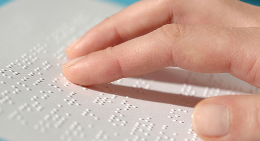

Problem Identification
Understanding the accessibility and vision impairment challenge in Malaysia — and why readlens is needed.
The Accessibility Challenge
Visual impairment and myopia are major public health concerns in Malaysia. According to the National Eye Surveys (2024), the prevalence of blindness among adults aged ≥ 50 years is 0.6–1.6 %, with untreated cataracts and diabetic retinopathy as leading causes.
Meanwhile, a systematic review by the Ministry of Health and IMU University (2026) found that up to 42.7 % of Malaysian adolescents experience myopia, with higher rates among females and Chinese Malaysians.
Existing assistive technologies—such as imported smart glasses and handheld readers—are cost prohibitive (RM 10,000–RM 15,000) and not locally serviceable, leaving many visually impaired Malaysians without practical support.

Target Users & Industry Focus
Visually impaired individuals — including blind and low-vision users — are the main target users of this project.
Why? Because they are unable to fully perceive visual information from their surroundings, such as identifying objects, recognizing colors, or reading printed and digital text. This limitation makes it difficult for them to perform daily activities independently.
Their reliance on non-visual senses — particularly touch and hearing — shapes how they navigate and obtain information. Yet the tools available to them today fall short:
- White canes detect obstacles and support safe navigation, but cannot identify what an object is or describe its characteristics.
- Smartphone apps (e.g. Seeing AI, Lookout) can perform object detection and text recognition, yet require users to hold and operate the phone manually — inconvenient when both hands are needed for mobility.
- Premium wearables (OrCam, Envision) offer a hands-free experience, but cost RM 10,000–15,000+, putting them out of reach for most users.
Therefore, there is a clear need for a practical, wearable assistive device that can automatically identify objects, recognize text in real time, and provide immediate audio feedback — hands-free. Such a solution would greatly improve the independence, safety, and quality of life of visually impaired individuals.

Project Goal
readlens is an affordable, wearable AI smart-glasses system designed to assist blind and myopic users in daily reading and object identification tasks. It integrates a camera, embedded processing, and a connected mobile application to perform text recognition and object identification, providing real-time spoken feedback through Bluetooth earphones.
Solution Strategy
- ESP32-S3 + OV5640 Camera — captures real-time images and streams them to the connected mobile app.
- readLens Mobile Application — processes captured images using NVIDIA AI cloud processing for text recognition and LLaVA-based object identification.
- Audio Feedback System — delivers spoken results and mode confirmations via Bluetooth earphones.
- Button Press Logic — tactile push button (GPIO4) controls capture and toggles between Text Mode and Object Mode, with audio prompts confirming the active mode.
- Confidence Threshold Decision — ensures reliable outputs; unclear results trigger retry prompts (“Result unclear, adjust angle”).
- Lightweight Modular Design — compact assembly (≤ 150 g) with detachable modules for battery, camera, and drivers.
- Affordable Components — built with ESP32-S3, OV5640, Li-Po battery, and Bluetooth drivers available in Malaysia.
Global Impact Alignment
The readlens system is closely aligned with the UN Sustainable Development Goal 3 (Good Health and Well-Being), specifically Target 3.8: Achieve universal health coverage and access to assistive technologies for persons with disabilities.
| Category | readlens Contribution |
|---|---|
| Direct Impact | Empowers blind and myopic individuals with independence through AI-assisted reading and object identification. |
| Target Achievement | Addresses accessibility gaps in Malaysia by providing a low-cost, locally manufacturable assistive device. |
| Health Outcome | Reduces mental strain, social isolation, and accidents caused by visual impairment through real-time audio feedback. |
| Alignment | Supports Malaysia's Digital Inclusion and Accessibility Framework (2025–2030) by integrating AI into healthcare and assistive technologies. |
Broader Societal Benefits
- Enhances educational access for visually impaired students through text-to-speech reading.
- Promotes safe urban mobility with obstacle detection and distance alerts.
- Encourages local innovation by using components available in Malaysia's maker ecosystem.
- Contributes to inclusive technology development, aligning with SDG 10: Reduced Inequalities.
Benchmarking & Competitive Analysis
How readlens compares against the current industry standards — OrCam MyEye and Envision Glasses — across the metrics that matter most to users.
OrCam MyEye
RM3,500+- Price RM3,500+ USD
- Architecture Proprietary & closed-source
- AI Model Fixed on-device only
- Form Factor Clip-on wearable
- Hands-Free Yes
- Local Sourcing Imported only
Envision Glasses
RM2,500+- Price RM2,500+ USD
- Architecture Proprietary & closed-source
- AI Model Cloud-dependent
- Form Factor Integrated glasses
- Hands-Free Yes
- Local Sourcing Imported only
readlens
Under RM300- Price Under RM300 total build
- Architecture Open-architecture
- AI Model Swappable (Llama 3.2 Vision, etc.)
- Form Factor Lightweight wearable
- Hands-Free Yes
- Local Sourcing Malaysia market
Premium experience, accessible price. readlens matches the crucial hands-free wearable form-factor of OrCam and Envision — while free smartphone apps like Seeing AI still require holding a phone — at under 1/30th the cost, with an open architecture that lets developers swap in any state-of-the-art AI model.
Research Validation
readlens is built on a solid scientific foundation. The core logic for AI-assisted navigation, obstacle detection, and accessibility is rigorously validated against key peer-reviewed research papers and established psychophysiological measures.
Prevalence of visual impairment and its causes in adults aged 50 years and older: Estimates from the National Eye Surveys in Malaysia (PLOS One) The Value of Vision: The case for investing in eye health (IAPB Vision Atlas) Prevalence of Myopia in Children and Adolescents: A Systematic Review of Malaysian Prevalence Studies (USM) Braille Reading Accuracy of Students Who Are Visually Impaired: The Effects of Gender, Age at Vision Loss, and Level of Education